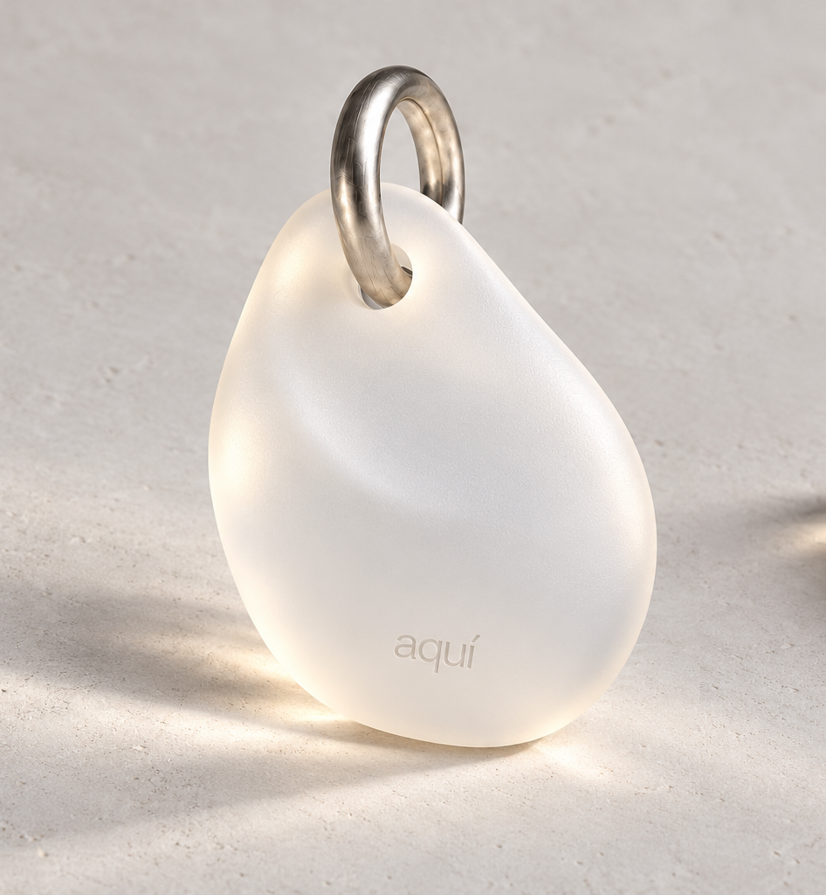

Chapter. 1
사별 전 아키 서비스 카피
NFC 진입
(1)깜식이 아키 서비스로 NFC 진입을 어떻게 할 거냐면요깜식이 아키 서비 스로 NFC 진입을 어떻게 할 거냐면요깜식이 아키 서비스로 NFC 진입 을 어떻게 할 거냐면요깜식이 아키 서비스로 NFC 진입을 어떻게 할 거 냐면요깜식이 아키 서비스로 NFC 진입을 어떻게 할 거냐면요

Chapter. 1
사별 전 아키 서비스 카피
깜식이 아키 서비스로 NFC 진입을 어떻게 할 거냐면요깜식이 아키 서비 스로 NFC 진입을 어떻게 할 거냐면요깜식이 아키 서비스로 NFC 진입 을 어떻게 할 거냐면요깜식이 아키 서비스로 NFC 진입을 어떻게 할 거 냐면요깜식이 아키 서비스로 NFC 진입을 어떻게 할 거냐면요